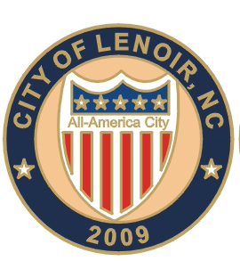
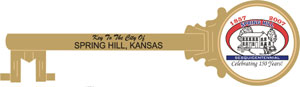

WHAT OUR CUSTOMERS HAVE TO SAY ABOUT US
We absolutely love the pins! They are everything we expected and more. Thank you so much. Please email me an invoice so that we may pay for the pins.
Thank you.
-City of Muleshoe
We received the pins and are thrilled with the outcome! I’ve received the invoice today and will forward it to our Treasurer and she will cut a check and get it in the mail ASAP. Thank you for making this so easy on us.
Hope that you have a very Merry Christmas!!
-City of Norman
I love the pins, you did a great job!! The colors are outstanding, thank you!!
-City of Vallejo
John, we have been buying from some guys out of Las Vegas. I don't know of any factories in Vegas, just gambling casinos. I am sure our pins were coming from China, as is everything else in our Country. I will not buy Chinese. Your pins and keys are really nice and we are satisfied with the beautiful quality of your work. I reccomend you to anyone. Your prices are very fair, the service is good, and the quality if superb.
-City of Leighton
Thank you so much John. We love our pins. I got to hand some out this weekend
and at other times we will sell them for $1. I am very happy – you did a nice job and
it was great working with you.
Thanks again and have a good evening.
-City of Forest Lake
Thanks for getting our pins to us when we needed them, delivery was super fast, and the pins were beautiful. We love them.
-City of Graysville

Mr. Lewis,
The City Manager is pleased with the quality of the All-America City lapel pins provided by your firm.
I will contact you, if additional pins are needed, or if any other promotional items are needed.
-City of Lenoir
I liked the first 500 very much! Let's do 500 more
Got them, they look great to me… Thanks for your hard work.
-H. Glen Barlow
John, I am receipt of the new lapel pins for Sherman. They are beautiful! Thank you so much for working with us.
-City of Sherman

"John,
We received the pins and presented them to our Town Manager at today’s Staff meeting.
The response was overwhelming! All are extremely please with your craftsmanship and the beauty of the pins.
So much so, that it was discussed of having a second pin created for another location in the Town.
I will share your brochure with that department and get back to you.Please keep our pin in your records for re-orders in the future.
Again, congratulations on creating a superior piece of jewelry.
Rick Sebastian - Administrative Assistant
"John, received the pins today. Very, very pleased. Please mail an invoice for payment. Enjoyed working with you on this order. Thanks"
|
|
Dear Mr. Lewis,
We received your shipment of keys to the City of Palmer, Alaska and are delighted with the quality and appearance of your product. As Mayor, I will be very proud to present these keys on appropriate occasions.
It has also been a distinct please doing business with you. I feel like I’ve known you for years.
Most sincerely,
John Combs
Mayor for the City of Palmer, Alaska |
|
Received the lapel pins yesterday afternoon. Very, very nice. See you at TML.
Thanks so much,
Kim |

I have to tell you how happy we are with the Key's to the City we received from
you. The weight and quality of these make them well worth the money. I had no
idea how these would turn out when we first started. Mr. Lewis sent me the art
mock up. It looked really good, but when we received the real things, I
couldn't believe my eyes. We were so proud to give these to our Distinguished
Citizens. They were very impressed. Mr. Lewis is very easy to work with and
actually follows through on when he tells you he'll do - what a novel concept in
today's world. I highly recommend him! If you are looking for distinctive
items that are amazing, please check with Mr. Lewis first - you'll be pleasantly
surprised.
Janet Hackney
City of Gardner, Kansas |
|
I Got them yet but I know he will like them. His wife has recently be diagnosed with breast cancer so he has been a little preoccupied these days. I love my badge too!!!! I will send you a check in the next few days.
Thanks again,
Elizabeth
City Clerk/Treas.
City of Guthrie |
The pins are quite nice.
Received the invoice and payment is being processed.
Evelyn J. Weimer
Town of Warrenton
|
VICTORIA, TEXAS
Got the beautiful Victoria Clean Cities pins!!!!! Great work! and thanks for the badge
jb
|
Dear Mr. Lewis:
The new Village of Lombard lapel pins arrived today. Although is has taken some time to make a decision on the type and size of pin, I realize now that selecting Keytocity.com to handle our order was a great decision. The larger size that you recommended shows off our Village seal much better then the smaller size that we had previously. The image of the logo is much sharper and the colors more vibrant. We will be proud to hand these pins out to citizens.
Again, thank you for all of your assistance in making the decisions that have led us to this great-looking pin. We look forward to ordering from you again once our supply diminishes.
Very truly yours,
William J. Mueller
Village President |
"Just received the pins. They are beautiful. Good job. I did not find an invoice. Please send me one and I will get you a check. I'm excited to take them to our meeting tomorrow. I may have another order from you from the Lions's Club. They placed an order with someone sometime ago and he took their money but never received their pins
Thanks again,
Nelwyn
City of Memphis" |
The City Manager and I are pleased with the savings you are offering the City, Mr. Lewis. We are currently paying $1.87 per lapel pin. Let me place our first order of 500 lapel pins at $1.19 each, a total cost of $595.00. Thank you for working with us on this project.
Pamela Cloer , City of Sherman TX , (903) 892-7201 |
Dear Mayor Lewis,
Wow, wow, what a great job you did. We love the pins. They cam great. I plan on showing them off to our sister cities in the hopes that they to will use your services."
Virginia Vainella, (Admin. Assist. to the city mayor of Holly Hill) |
"We saved over 50% buying our pins from you, no shipping and no setup fees, what a change. We will buy all of our pins from you in the future! We loved them."
Ruby Hahn, (Jackson County, 911) |
"John ...I got the badges and the Keys...they look great..."

Herbert G. Cooley, (Chief of Police, Vinton Police Department)
|
"Everyone liked the pins! Great quality and great price. Thanks so much for your time and patience in getting the design right."
Suzanne Gardner, (LA.gov) |
"Thanks for the pins. They look great and we love them."
Doug Petroshius, (Village of Clarendon Hills, Illinois) |
"John, the keys were very nice. The Mayor was very pleased! Thank you so much."
Paula, (Pekin, Illinois) |
"I can't thank you enough for the beautiful lapel pins you designed for the city of flowery branch. Everyone here loves them and you made me look like a hero. You did a great job. If you need a reference, please use my name and tell them to call me."
C. Hirling, (City Clerk, Flowery Bunch, Georgia) |
"We have just received our order and the keys are beautiful, and the pins look great. The Mayor and Council were pleased that we saved about 50% buying them from you. Thanks for a great job, and saving us money."
Mary Shaner, (City of Cedar Bluff, Alabama) |
"I received the pins today. They are beautiful. You exceeded my expectations! The design and pin quality are wonderful. We will definitely use you in the future and I would be happy to serve as a reference."
Jim, (VAACORP) |
"I just wanted to let you know that I received the pins last week and they are great! Everyone I have given one out to has always asked for one or two more for other people. They are going fast and I'll probably have to place another order soon. The quality and detail are absolutely amazing. Thank you again for a great product and a great service."
Mayor Harry Zikas, Jr (Borough of Alpha ) |
The pins were delivered Saturday morning, and they look GREAT! Thanks so much for doing such a good job on these. I think this one will be the “pin to have” at the World Series!
Martha Gilliland, Steele, Al. 35987 |
DEAR MAYOR LEWIS,
THE LAPEL PINS YOU MADE FOR OUR CITY TURNED OUT REALLY GOOD.
WE LOVE SHARING OUR FISH WITH OTHER CITIES. WE ARE THE HOME OF BEAUTIFUL WEISS LAKE AND THE CRAPPIE CAPITAL OF THE WORLD. WE INTEND TO PROMOTE OUR AREA WITH THE AMERICAN MAD PINS.
THANKS AGAIN,
MARY LEE TUCKER, CITY CLERK
CITY OF CENTRE |
THIS IS A LETTER THAT WAS SENT TO 35 OTHER MUNICIPALITIES IN THE LOMBARD ILLINOIS AREA. WE DID NOT ASK THE WONDERFUL PEOPLE AT LOMBARD TO WRITE THIS LETTER. IT WAS A BIG SURPRISE TO US, BUT WE ARE HAPPY, THAT WE HAVE CUSTOMERS LIKE LOMBARD.
Back to Top of Page
|